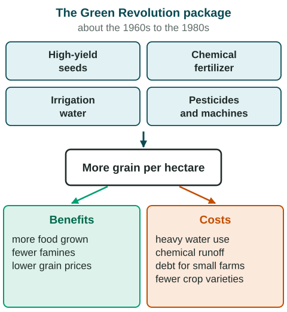

The Green Revolution
The Green Revolution, from the 1960s to the 1980s, spread high-yield wheat and rice with fertilizer, irrigation and pesticides.
Part 1 · Hook
Why this matters
Part 2 · Before you start
What this builds on
Part 3 · Prerequisite check
Quick check before you start
1. What did Thomas Malthus predict?
- Population would grow faster than food, leading to famine and other checks
- Food would grow faster than population forever
- Birth rates would fall as countries developed
- Most people would move from farms to towns
Show the answer
Malthus (1798) argued food supply grows more slowly than population.
- Correct: Population would grow faster than food, leading to famine and other checks:
- Food would grow faster than population forever:
- Birth rates would fall as countries developed:
- Most people would move from farms to towns:
2. Replacing human and animal labor with machines is called what?
- Mechanization
- Domestication
- Irrigation
- Enclosure
Show the answer
Mechanization was a key part of the Second Agricultural Revolution.
- Correct: Mechanization:
- Domestication:
- Irrigation:
- Enclosure:
Part 4 · See it
See it first

Part 5 · Step by step
How it works, step by step
- Scientists bred short, high-yield varieties of wheat and riceeach plant could turn water and fertilizer into much more grain
- Farmers on irrigated plains planted the new seeds with fertilizergrain harvests rose sharply in places such as Punjab, India
- Irrigated rice and wheat need large amounts of waterheavy pumping lowered groundwater levels
- The inputs cost money that larger farmers could pay more easilysome small farmers fell behind or into debt
Part 6 · Key ideas
Key ideas
- The Green Revolution (about 1960s to 1980s) spread high-yield varieties of wheat and rice with fertilizer, irrigation, pesticides and machines, starting from research in Mexico and the Philippines.
- Positive: more food, fewer famines, cheaper grain. Negative: heavy water and chemical use, less crop variety, and gains that favored larger farmers.
- It spread unevenly: irrigated plains in Asia gained most; dry, rain-fed regions in Sub-Saharan Africa gained less.
- GMOs, with genes changed in a lab, came in the late 1990s. They are not part of the Green Revolution.
Part 7 · Misconception
A common mistake
The wrong idea: GMO crops were the main technology of the Green Revolution.
What actually happens: Green Revolution seeds were bred by crossing plants in the 1960s to 1980s. GMOs, with genes changed in a lab, spread on farms from the late 1990s.
Part 8 · Check yourself
Check yourself
Exam-style questions. Anything you miss goes into your review queue.
Data
Wheat yields in two regions, 1950 to 2000
Invented data for practice.
1. Which statement compares the two regions in the chart?
- Yields rose in both, but much faster in Region X after 1960
- Yields rose quickly in Region Y after 1960 but fell in Region X
- Yields were the same in both regions in 2000
- Yields in both regions stayed flat from 1950 to 2000
Show the answer
A compare speaks of both lines: both rise, but the irrigated plain pulls far ahead after 1960, when Green Revolution seeds spread.
- Correct: Yields rose in both, but much faster in Region X after 1960: Right: Region X climbs from 1.0 to 2.8 after 1960, while Region Y rises slowly to 1.2.
- Yields rose quickly in Region Y after 1960 but fell in Region X: Region X rises steeply; Region Y rises slowly. Neither falls.
- Yields were the same in both regions in 2000: In 2000 Region X yields 2.8 and Region Y 1.2 tonnes per hectare.
- Yields in both regions stayed flat from 1950 to 2000: Both lines rise, Region X much more steeply.
2. By what percent did wheat yield in Region X increase from 1960 to 1990?
Type a number (%). No calculator needed: work it out by hand, as on the exam.
Show the answer
- Answer: 150 %
3. Which explanation best accounts for the gap between the two regions after 1960?
- Region Y planted the new seeds first, so its soil was worn out
- Region X stopped irrigating after 1960 and switched to rain-fed crops
- The new seeds needed water and fertilizer, which Region X could supply
- GMO crops were planted in Region X in the 1960s
Show the answer
The Green Revolution was a package: high-yield seeds plus irrigation, fertilizer and pesticides. Where water was short, yields rose much less.
- Region Y planted the new seeds first, so its soil was worn out: If Region Y had planted them first, its line would rise first; it rises least.
- Region X stopped irrigating after 1960 and switched to rain-fed crops: The legend calls Region X an irrigated plain.
- Correct: The new seeds needed water and fertilizer, which Region X could supply: Right: high-yield varieties give big gains only with irrigation and fertilizer, which the irrigated plain had.
- GMO crops were planted in Region X in the 1960s: GMOs spread on farms from the late 1990s, not the 1960s.
4. A student uses Region X alone to argue that the Green Revolution ended hunger everywhere. Why is this conclusion weak?
- Region X's yield fell after 1990
- The chart shows no data before 1960
- Region Y's yield rose faster than Region X's over the whole period
- Region Y shows gains were small where water was scarce
Show the answer
Results at one place do not show a global pattern. Regions without irrigation, such as much of Sub-Saharan Africa, gained far less.
- Region X's yield fell after 1990: Region X keeps rising, from 2.5 to 2.8.
- The chart shows no data before 1960: It starts in 1950.
- Region Y's yield rose faster than Region X's over the whole period: Region Y rose more slowly.
- Correct: Region Y shows gains were small where water was scarce: Right: the chart itself shows uneven results; one region cannot stand for the world.
5. A news story calls GMO soybeans "part of the Green Revolution." Why is this incorrect?
- GMOs came decades later, in the late 1990s
- GMOs were grown long before the Green Revolution began
- Soybeans were domesticated in the Fertile Crescent
- The Green Revolution did not use any new seeds
Show the answer
Keep the two apart: Green Revolution seeds were bred by crossing plants (1960s to 1980s); GMOs have genes changed in a lab and spread from the late 1990s.
- Correct: GMOs came decades later, in the late 1990s: Right: the Green Revolution used cross-bred seeds from the 1960s; lab gene changes spread on farms from the late 1990s.
- GMOs were grown long before the Green Revolution began: GMOs came after the Green Revolution, not before.
- Soybeans were domesticated in the Fertile Crescent: Soybeans were domesticated in East Asia; in any case, this is not why the claim is wrong.
- The Green Revolution did not use any new seeds: New high-yield seeds were at its center.
6. Which was a negative social effect of the Green Revolution in parts of South Asia?
- Grain prices rose because harvests became smaller
- Farmers returned to shifting cultivation in the forests
- Fewer people could buy rice and wheat in the market
- Farmers who could not afford inputs fell behind or into debt
Show the answer
The package favored farmers with land, water and credit. Inequality between farmers often grew even as total food supply rose.
- Grain prices rose because harvests became smaller: Harvests grew, and grain prices generally fell.
- Farmers returned to shifting cultivation in the forests: Green Revolution farming is intensive and fixed.
- Fewer people could buy rice and wheat in the market: More grain made rice and wheat more widely available.
- Correct: Farmers who could not afford inputs fell behind or into debt: Right: seeds, fertilizer, pumps and pesticides cost money, so larger farmers gained most and some small farmers borrowed heavily.
Part 9 · Summary
Summary
Part 10 · Up next
What comes next
Part 11 · Connections